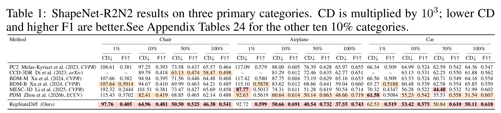

Overview
Representation guidance for state-evolution denoising
Single-view 3D reconstruction seeks to recover complete object geometry from a single RGB image, yet remains inherently ambiguous because the observation reveals only a partial, viewpoint-dependent surface. Diffusion models offer a flexible generative formulation for this task, but point-cloud denoising requires a coherent global shape hypothesis that can be selectively updated with local image evidence.
To address this challenge, we introduce RepStateDiff, a representation-guided conditional diffusion framework that formulates reconstruction as state-evolution denoising. By separating persistent shape retention from evidence-driven state updates, RepStateDiff preserves global structure while refining local geometry with image-aligned cues. It aligns frozen visual features with noisy 3D points and propagates hierarchical tokens through StateEvo, a linear-time sequence mixer; intermediate representation alignment and internal guidance further couple visual semantics to denoising.
On ShapeNet-R2N2 and Pix3D, RepStateDiff achieves the strongest F1-scores across most evaluated settings and remains robust even with merely 1% of training data. On the three primary ShapeNet-R2N2 categories at 10% training data, it improves mean CD/F1 over PDM from 66.09/0.525 to 56.34/0.582, while PDM retains faster inference.
Quality and efficiency under data scarcity

Qualitative reconstruction
ShapeNet-R2N2


Pix3D


Quantitative results
ShapeNet-R2N2 reconstruction results

Additional visualizations